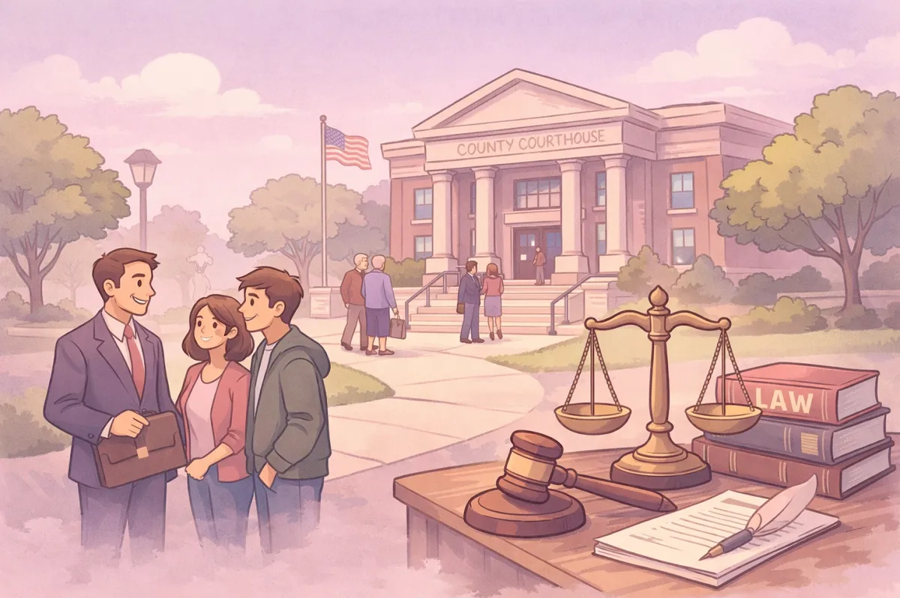
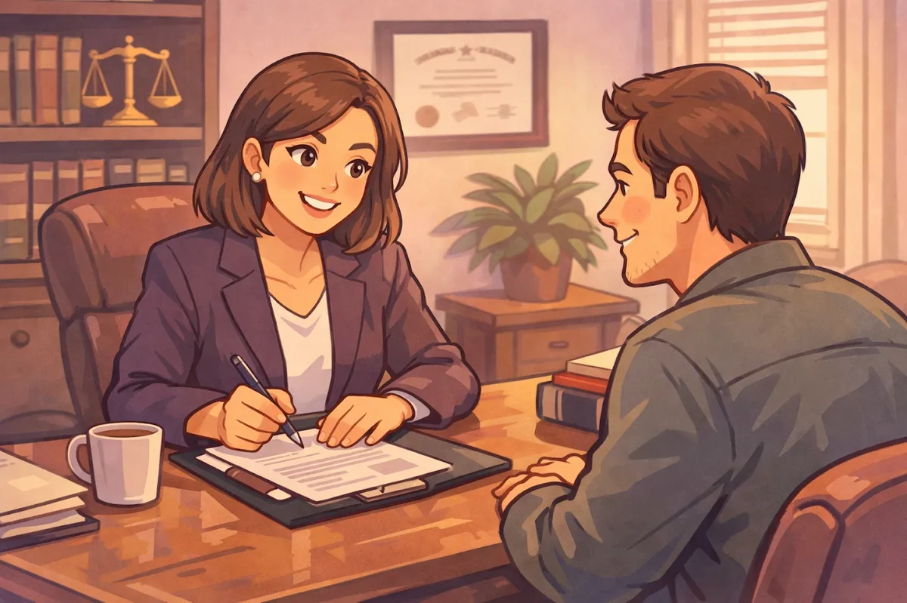

Your Guide to the Jennings County Courthouse: Parking, Security, and What to Expect

If you have a court date coming up, you're probably feeling a bit of a knot in your stomach. It's completely normal. Whether you are heading to the courthouse for a small claims dispute, a divorce hearing, or a more serious legal matter, the unknown is always the hardest part. As a lawyer from North Vernon, Indiana, I see people get tripped up by the small stuff every single week. It's not usually the law that confuses them first: it's the parking, the security line, or realizing they can't bring their phone inside to call their ride.
I believe in being a neighbor first and an attorney second. I'm writing this guide to help my neighbors in Jennings County, from the folks living right in North Vernon to those coming in from Commiskey, Hayden, and Scipio. I want to make sure that when you pull up to the courthouse, you feel prepared and confident.
A Quick Geography Lesson: Vernon vs. North Vernon
First things first: don't let the name of our biggest city confuse you. While most people search for attorneys in North Vernon, Indiana, the actual legal heart of our county is located just a few minutes south in the historic town of Vernon.
The Jennings County Courthouse is located at 24 North Pike Street, Vernon, IN 47282.
Vernon is a beautiful, historic spot: it was actually founded back in 1815. But because it's a historic town with a population of just a few hundred people, it wasn't exactly designed for modern morning traffic. If you put "North Vernon Courthouse" into your GPS, just make sure the pin drops in Vernon. If you end up at the City Hall in North Vernon, you're in the wrong place for your court hearing.
The Parking Puzzle
I always tell my clients the same thing: give yourself a buffer. You should aim to arrive at least 15 to 20 minutes before your scheduled hearing time.
Why so early? Because parking in Vernon can be a real puzzle on a busy Monday or Thursday morning, especially if there is a jury trial scheduled. The courthouse is an incredible brick building dating back to 1857, which means the streets around it are narrow and space is limited. There isn't a massive parking garage next door. You'll be looking for street parking nearby.
If you are coming from Scipio or Hayden, remember that traffic on Highway 7 or 50 can sometimes back up. If you arrive late, the judge might start without you, or worse, issue a warrant for a "failure to appear." Arriving early gives you time to find a spot, take a deep breath, and walk to the building without breaking a sweat.
Clearing Security: Leave the Tech at Home
When you approach the entrance, you're going to meet the security team. They are there to keep everyone safe, and they take their jobs seriously.
It should go without saying, but leave any pocketknives, multi-tools, or pepper spray at home or in the car. Even a small keychain knife will be confiscated or will result in you being denied entry. As your Jennings County attorney, I want you focused on your case, not on why your favorite pocketknife just got tossed in a bin.
What to Wear: The "Sunday Best" Rule
I'm a big believer in a casual, approachable lifestyle, but the courtroom is one place where tradition still matters. You don't need to go out and buy an expensive three-piece suit, but you should dress with respect for the process.
I usually recommend "business casual" or your "Sunday best." Think of it as if you're going to a job interview or a church service in North Vernon.
What to wear: Slacks, a button-down shirt, a modest dress, or a nice blouse.
What to avoid: Hats (you'll be asked to take them off immediately), flip-flops, tank tops, and shirts with offensive language or big logos.
When you look like you're taking the situation seriously, it sends a message to the judge and the court staff that you respect their time and the law.
Navigating the Building: Who Goes Where?
Once you're through security, you need to find your courtroom. The Jennings County Courthouse is fairly easy to navigate once you know the split:
The First Floor: Superior Court. The Jennings Superior Court is located on the first floor. Generally, this is where you'll go for misdemeanors, small claims cases, divorces, and traffic infractions. If you're here for a speeding ticket or a landlord-tenant dispute, you're likely staying on the ground level.
The Second Floor: Circuit Court. The Jennings Circuit Court is located on the second floor. This court typically handles complex civil cases, juvenile matters, estates and probate, and major criminal cases.
If you're unsure where to go, there are usually dockets (schedules) posted on the monitors upstairs, or you can politely ask the staff at the security desk. Everyone is there to do a job, and if you're polite, they're usually happy to point a neighbor in the right direction.

Why Having a Local Attorney Matters
I've spent a lot of time in these hallways. During my tenure, I've handled a wide variety of complex legal matters.
When you hire a lawyer in North Vernon, Indiana, you aren't just hiring someone who knows the law: you're hiring someone who knows the people. I know how our local courts operate, I know the local procedures, and I'm right here in the community. I'm a "small town lawyer" who wears many hats because that's what our community needs.
I don't believe in overcomplicating things. My goal is to listen to what you have to say and give you clear options. I want to solve your legal needs so you can get back to your life in Scipio or Commiskey without that weight on your shoulders.
Common Pitfalls to Avoid
Beyond the big rules, there are a few "unspoken" things that can make your day easier:
Silence is Golden. Once you are in the courtroom, keep your voice down. Even if you aren't the one speaking to the judge, sound carries in those old rooms.
Bring Paperwork. Since you won't want to give the Court your phone, print out everything you think you might need.
Be Patient. Sometimes court dockets get backed up. You might be scheduled for 9:00 AM but not called until 10:30 AM. Bring a book to pass the time.
Kids in Court. Unless it's a juvenile matter where they are required to be there, it's usually best to find a babysitter. Courtrooms can be long, boring, and sometimes intense environments for children.
Getting the Help You Need
Navigating the legal system is tough, but you don't have to do it alone. If you're feeling overwhelmed about an upcoming date at the Jennings County Courthouse, let's talk. I offer straightforward advice and a personal approach that big-city firms just can't match.
You can learn more about me and my experience on my About Me page, or check out my other blog posts for more tips on Indiana law. I believe in transparency, which is why I'm always honest about things like travel fees and what to expect from your case.
If you're ready to sit down and chat about your situation, feel free to contact me today. We can look at your case together and find the best path forward. Whether it's a custody hearing or a criminal matter, I'm here to help my neighbors navigate the halls of the Jennings County Courthouse with their heads held high.